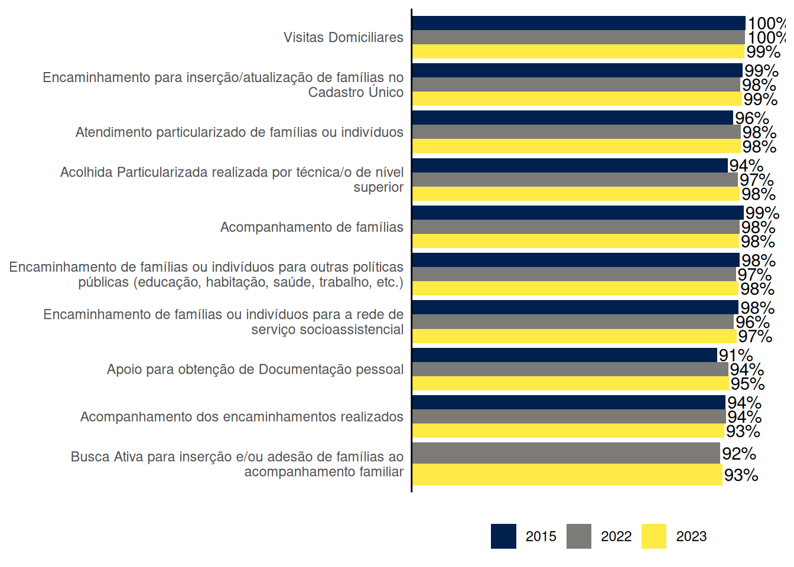
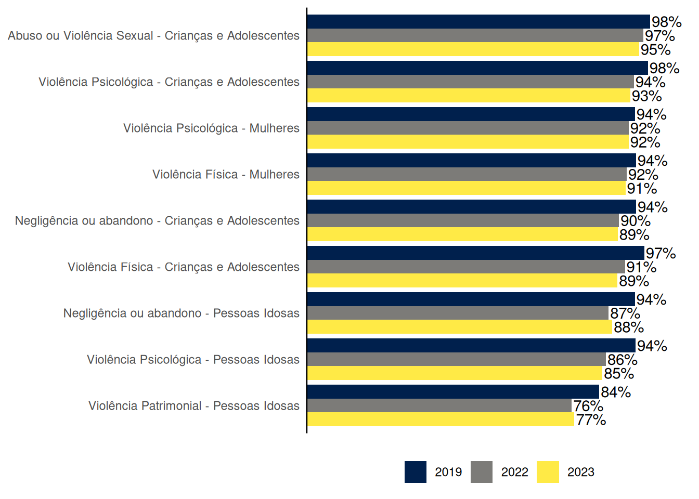
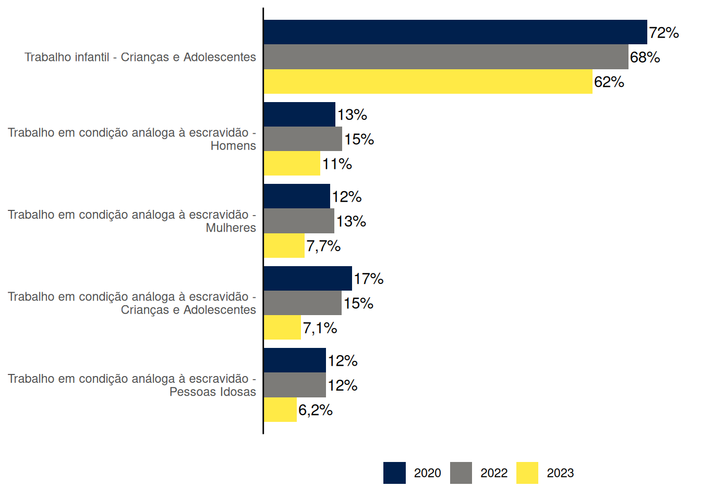
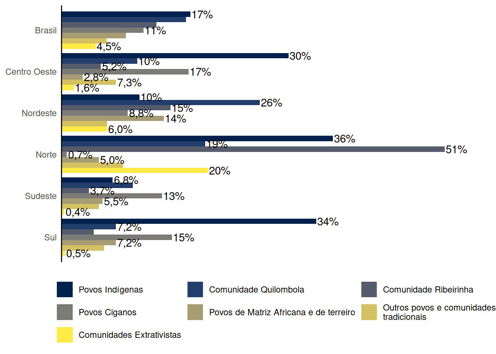
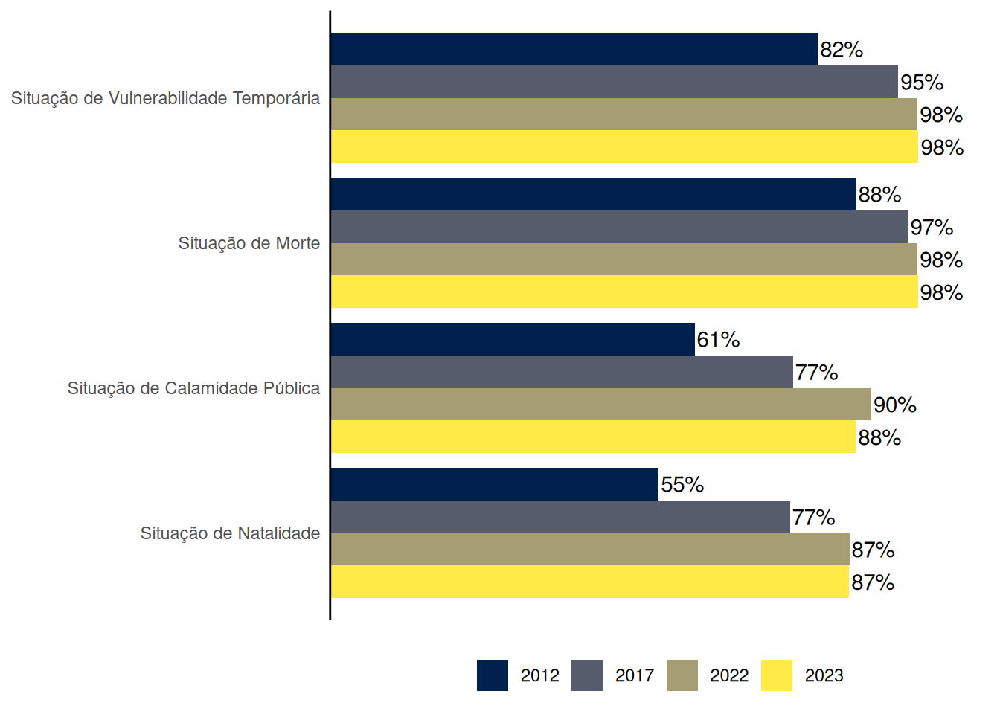
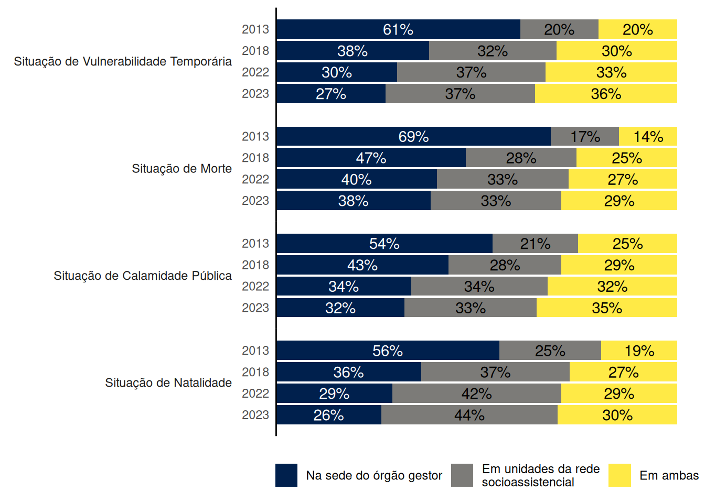

4 Serviços e Benefícios ofertados pelo SUAS
A Assistência Social organiza-se por provisões e elas correspondem a seguranças previstas na integração de serviços e benefícios. No ambito dos Serviços, estão previstos através de dois tipos de proteção:
a Proteção Social Básica, definida no Art. 6º-A da Lei Orgânica da Assistência Social (LOAS) como um “conjunto de serviços, programas, projetos e benefícios da assistência social que visa a prevenção de situações de vulnerabilidade e risco social por meio do desenvolvimento de potencialidades e aquisições e do fortalecimento de vínculos familiares e comunitários” e
a Proteção Social Especial, definida como “conjunto de serviços, programas e projetos que tem por objetivo contribuir para a reconstrução de vínculos familiares e comunitários, a defesa de direito, o fortalecimento das potencialidades e aquisições e a proteção de famílias e indivíduos para o enfrentamento das situações de violação de direitos”.
Este capítulo apresenta alguns dados do Censo SUAS relativos à oferta de serviços e benefícios da Assistência Social no âmbito da Proteção Social Básica e da Proteção Social Especial.
4.2 Serviços da Proteção Social Especial - Média Compexidade
A Proteção Social Especial de Média Complexidade organiza a oferta de serviços, programas e projetos de caráter especializado que requerem maior estruturação técnica e operativa, com competências e atribuições definidas, destinados ao atendimento a famílias e indivíduos em situação de risco pessoal e social, por violação de direitos.
É ofertada pelos seguintes equipamentos do SUAS:
- Centros de Referência Especializados de Assistência Social (CREAS),
- Centros de Referência Especializados para População em Situação de Rua (Centro POP), e
- Centro-Dia.
Os serviços de Proteção Social Especial ofertados no nível de Média Complexidade são:
- Serviço de Proteção e Atendimento Especializado a Famílias e Indivíduos (PAEFI);
- Serviço de Proteção Social a Adolescentes em Cumprimento de Medida Socioeducativa de Liberdade Assistida e de Prestação de Serviços à Comunidade;
- Serviço Especializado em Abordagem Social;
- Serviço de Proteção Social Especial para Pessoas com Deficiência, Idosos e suas Famílias e
- Serviço Especializado para Pessoas em Situação de Rua.
4.2.1 Serviço de Proteção e Atendimento Especializado a Famílias e Indivíduos (PAEFI)
O PAEFI é definido na Tipificação Nacional de Serviços Socioassistenciais como sendo o “serviço de apoio, orientação e acompanhamento a famílias com um ou mais de seus membros em situação de ameaça ou violação de direitos”, e que “compreende atenções e orientações direcionadas para a promoção de direitos, a preservação e o fortalecimento de vínculos familiares, comunitários e sociais e para o fortalecimento da função protetiva das famílias diante do conjunto de condições que as vulnerabilizam e/ou as submetem a situações de risco pessoal e social”.
O Gráfico 4.5 mostra as situações e perfis com os maiores percentuais de CREAS que relataram ter realizado atendimento nessas situações e perfis em 2023. Todos os percentuais deste gráfico caíram em 2023 em relação a 2019, e a maioria caiu também em relação a 2022. As situações e perfis com maiores percentuais de CREAS que realizaram atendimento foram as situações de abuso e violência sexual e as de violência psicológica contra crianças e adolesecente, e as situações de violência psicológica e de violência física contra mulheres, com mais de 90% dos CREAS tendo relatado a realização de atendimentos dessas situações e perfis.

A seguir destacamos algumas situações atendidas no PAEFI que não estão entre as situações com maiores percentuais de CREAS que realizaram atendimento.
O Gráfico 4.6 mostra os percentuais de CREAS que realizaram atendimentos do PAEFI em situações de trabalho em condição análoga à escravidão e de trabalho infantil. Os percentuais de CREAS que realizaram atendimentos nestas situações caiu em 2023.

Os percentuais de CREAS que realizaram atendimento do PAEFI para pessoas em situação de imigração (internacional) e/ou refúgio reduziram em 2023 em relação a 2022 (Gráfico 4.7).

O Gráfico 4.8 mostra os percentuais de CREAS segundo realização de atendimento de povos e comunidades tradicionais. Os Povos Indígenas são o grupo com maior percentual de CREAS que os atenderam (17%), percentual puxado pelos CREAS da Região Norte (36% dos CREAS), Sul (34%) e Centro-Oeste (30%).
Logo em seguida observamos as Comunidades Quilombolas, puxado pelo alto percentual de CREAS que os atenderam na Região Nordeste (26%).
Destaca-se o alto percentual de CREAS da Região Norte que atenderam Comunidades Ribeirinhas (51%).

4.3 Serviços da Proteção Social Especial - Alta Complexidade
Os Serviços de Proteção Social Especial de Alta Complexidade destinam-se a famílias e/ou indivíduos afastados temporariamente do núcleo familiar e/ou comunitário de origem. Estes Serviços são organizados em diferentes regulamentações, modalidades e públicos.
4.3.1 Serviço de Acolhimento em Família Acolhedora
O Serviço de Acolhimento em Família Acolhedora “organiza o acolhimento de crianças e adolescentes, afastados da família de origem ou extensa por medida de proteção, em residência de famílias acolhedoras cadastradas. É previsto até que seja possível o retorno à família de origem ou, na sua impossibilidade, o encaminhamento para adoção. O serviço é o responsável por selecionar, capacitar, cadastrar e acompanhar as famílias acolhedoras, bem como realizar o acompanhamento da criança e/ou do adolescente acolhido e da sua família de origem.”
O Gráfico 4.12 mostra um contínuo crescimento do percentual de Municípios com unidades municipais executoras do Serviço de Acolhimento de Família Acolhedora, chegando a 10% dos Municípios brasileiros em 2023, com destaque para a Região Sul, cujo percentual chegou a 23%.

.
4.4 Benefícios Eventuais
Os Benefícios Eventuais são um tipo de proteção social que se caracteriza por sua oferta de natureza temporária para prevenir e enfrentar situações provisórias de vulnerabilidade decorrentes ou agravadas por nascimentos, mortes, vulnerabilidades temporárias e calamidades. O Conselho Nacional de Assistência Social, através de um amplo debate e processo de consulta pública atualizou a resolução prevista através: CNAS/MDS Nº 212 de outubro de 2025.
Destaca-se que a oferta dos Benefícios Eventuais caracteriza-se como direito, portanto diferencia-se de doação. A forma e critérios de sua concessão devem ser deliberadas pelo Conselho de Assistência Social local.
Observamos no Gráfico 4.13 que em 2023 se manteve o percentual de Municípios de 2022 que concediam Benefícios Eventuais, exceto em situações de calamidade pública, em que houve um recuo de 2 pontos percentuais.

Em relação aos locais onde os benefícios são concedidos nos Municípios, Gráfico 4.14, vemos uma redução na concessão realizada apenas na sede do Órgão Gestor, com aumento da concessão realizada em unidades da rede socioassistencial ou em ambos os locais.
